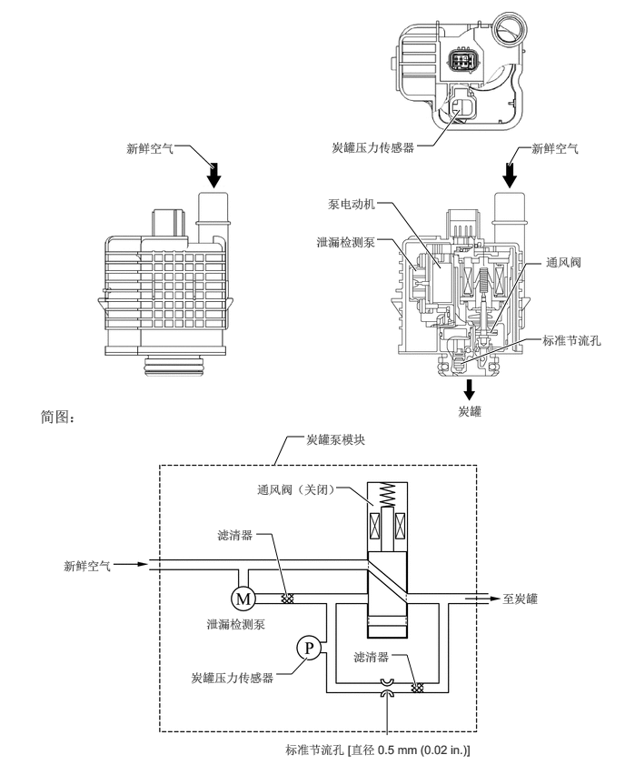

2,1.667 2.177,1.667
2.177,1.667 2.448,1.927
true
4.781,1.667 4.969,1.667
4.969,1.667 5.271,1.26
true
5.833,1.896 5.948,1.688
5.948,1.688 6.094,1.688
true
4.323,2.323 4.5,2.323
4.5,2.323 5.052,3.073
true
4.323,2.74 4.5,2.74
4.5,2.74 4.771,3.104
true
5.625,3.813 6.031,3.021
6.031,3.021 6.208,3.021
true
5.281,4.167 6.031,3.885
6.031,3.885 6.208,3.885
true
3.146,5.323 3.292,5
3.292,5 3.49,5
true
3.854,5.583 4.01,5.583
4.01,5.583 4.281,5.792
true
2.938,6.115 3.115,6.115
3.115,6.115 3.292,6.844
true
3.167,7.719 3.344,7.719
3.344,7.719 3.521,7.531
true
4.49,7.5 4.667,7.5
4.667,7.5 4.771,7.865
true
4.438,8.417 4.438,7.917
true
1.448,1.615 2.094,1.854
0.635,0.229
10
false
新鲜空气
3.802,1.604 4.969,2.01
1.156,0.396
10
false
炭罐压力传感器
6.094,1.615 6.74,1.854
0.635,0.229
10
false
新鲜空气
3.76,2.25 4.583,2.479
0.813,0.219
10
false
泵电动机
3.625,2.688 4.604,3.125
0.969,0.427
10
false
泄漏检测泵
6.26,2.917 6.958,3.146
0.688,0.219
10
false
通风阀
6.219,3.813 7.167,4.583
0.938,0.76
10
false
标准节流孔
5.25,4.625 5.854,4.896
0.594,0.26
10
false
炭罐
0.458,4.667 2.073,4.948
1.604,0.271
12
false
简图：
3.51,4.948 4.958,5.198
1.438,0.24
10
false
炭罐泵模块
0.729,6.396 1.375,6.635
0.635,0.229
10
false
新鲜空气
2.948,5.521 3.99,5.792
1.031,0.26
10
false
通风阀（关闭）
2.365,7.063 3.74,7.344
1.365,0.271
10
false
泄漏检测泵
2.49,6.042 3.063,6.365
0.563,0.313
10
false
滤清器
2.188,7.677 3.333,8.115
1.135,0.427
10
false
炭罐压力传感器
4.052,7.438 4.667,7.729
0.604,0.281
10
false
滤清器
3.271,8.5 6.198,8.792
2.917,0.281
10
false
标准节流孔 [直径 0.5 mm (0.02 in.)]
5.76,6.771 6.531,7.01
0.76,0.229
10
false
至炭罐